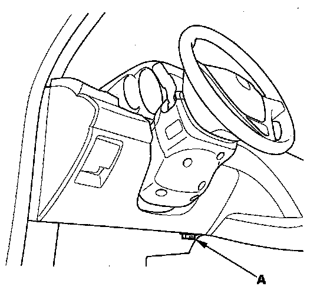

Component Tests and General Diagnostics
ODS Unit Operation CheckCheck the ODS operation after any of these actions.
- Replacement of front passenger's seat component(s) (except ODS unit and/or weight sensors)
- After a vehicle collision
- SRS unit replacement
Pre-Operation Check Set-up
- Make sure all the components of the front passenger's seat are correctly installed.
- Position the front passenger's seat to the rearmost position. Adjust the seat recline to the forward most position. Do not move the seat from this position.
- Make sure nothing is on or under the front passenger's seat.
- Make sure there is nothing in the front passenger's seat-back pocket.
- Keep the windows closed.
- Do all calibration procedures, except test-driving, in the service bay.
- Make sure the vehicle is on level ground.
- Turn the heater and the A/C off.
- Do not touch the passenger's seat during the calibration.
- Do not expose the front passenger's seat to sudden temperature changes.
- Make sure all aftermarket devices such as amplifiers, fluorescent light, air purifiers, CB or HAM radios, etc. are turned off.
After Replacing Front Passenger's Seat Component(s)

1. Connect the HDS to the data link connector (DLC) (A).
2. Make sure the HDS communicates with the vehicle and the SRS unit. If it does not, troubleshoot the DLC circuit.
3. Drive the vehicle, accelerate to 20 mph (36 km/h), then stop on level ground.
4. From the HDS Main Menu, select SRS, then Inspection. In the HDS Inspection Menu, select "SEAT OUTPUT CHK" and follow the prompts until the ODS operation check has been completed.